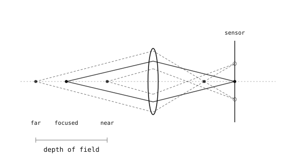

4.2. Ống kính và tiêu điểm¶
Lỗ kim hoạt động nhưng mờ tối. Ống kính thay thế lỗ kim bằng một khẩu độ rộng hơn và hội tụ lại mọi tia sáng đi vào nó về một điểm duy nhất trên mặt phẳng ảnh, do đó ảnh vừa sáng vừa sắc nét -- sự đánh đổi mà lỗ kim buộc phải có sẽ biến mất.
4.2.1. Khúc xạ¶
Ánh sáng chậm lại khi đi vào môi trường đặc hơn (kính) từ môi trường nhẹ hơn (không khí), và sự thay đổi tốc độ tại giao diện làm cong tia sáng. Ống kính là một mảnh kính được định hình sao cho mọi tia sáng từ một điểm cảnh nhất định đều cong đúng lượng cần thiết để hội tụ lại tại cùng một điểm trên bức tường phía sau. Các tia sáng từ một điểm cảnh khác nhau hội tụ tại một điểm khác, và cứ thế; ảnh được xây dựng từng điểm cảnh một, giống hệt như lỗ kim, nhưng với nhiều ánh sáng hơn nhiều trên mỗi điểm.
4.2.2. Mô hình ống kính mỏng¶
Thiết kế ống kính thực tế tính đến hình dạng kính, nhiều phần tử, và bước sóng của ánh sáng đi qua chúng. Hình học mà phần còn lại của phần này cần đến đến từ một lý tưởng hóa đơn giản hơn -- mô hình ống kính mỏng -- coi ống kính như một mặt phẳng thẳng đứng trên trục quang học nơi các tia sáng thay đổi hướng ngay lập tức, bỏ qua độ dày thực tế của ống kính.
Mô hình được neo bởi một quan sát khởi đầu: các tia sáng đến ống kính song song với trục quang học đều khúc xạ để đi qua cùng một điểm phía sau ống kính. Điểm đó là tiêu điểm, và khoảng cách của nó từ ống kính là tiêu cự của ống kính, thường được ký hiệu là \(f\). Một "ống kính 50 mm" là một ống kính có tiêu cự 50 mm. Mỗi ống kính có hai tiêu điểm, một ở mỗi bên, ở khoảng cách bằng nhau \(f\) -- một bên ảnh và một bên đối xứng ở phía đối tượng.
Từ một thực tế duy nhất đó, hai quy tắc vẽ tia sáng xuất hiện và cho phép mô hình định vị bất kỳ điểm ảnh nào:
Một tia sáng vào ống kính song song với trục sẽ khúc xạ để đi qua tiêu điểm xa ở phía ảnh.
Một tia sáng đi qua tâm của ống kính tiếp tục thẳng, không bị lệch -- vì ở tâm ống kính đủ mỏng đến mức thực tế không có kính nào để bẻ cong tia sáng.
Những quy tắc đó có thể trông như mô tả của một vết tia sáng duy nhất, nhưng chúng mô tả những gì ống kính làm tại mọi điểm cảnh cùng một lúc. Mỗi điểm nhìn thấy được tán xạ ánh sáng theo mọi hướng; bất kỳ tia sáng nào của nó đi vào ống kính đều hội tụ lại tại ảnh của điểm đó ở phía bên kia. Bức tranh hoàn chỉnh là hợp nhất của hàng triệu sự hội tụ theo từng điểm đó, tất cả xảy ra song song.

Quy tắc song song-đến-tiêu điểm áp dụng tại mọi điểm của đối tượng. Mỗi điểm cảnh tạo ra điểm ảnh riêng của nó ở phía bên kia; cùng nhau chúng vạch ra một ảnh ngược hoàn chỉnh.¶
Phóng to vào một điểm cảnh duy nhất làm cho cấu trúc trở nên rõ ràng. Hai tia sáng rời khỏi điểm cảnh đó -- một song song với trục (khúc xạ qua tiêu điểm xa) và một qua tâm ống kính (không bị lệch) -- giao nhau ở phía bên kia của ống kính, và nơi chúng giao nhau là ảnh của điểm đó.
![Two diagrams stacked. The top diagram shows three parallel rays entering a vertical lens from the left and refracting to converge at a focal point on the optical axis at distance f behind the lens. The bottom diagram shows the thin-lens construction: an upright arrow on the left at distance u in front of the lens, with the near and far focal points marked on the axis. A parallel-then-through-focal-point ray and a straight-through-centre ray leave the arrow's tip, refract at the lens, and meet on the right at distance v behind the lens, where an inverted image arrow ends.](../../../../_images/thin-lens.svg)
Trên: các tia song song hội tụ tại tiêu điểm. Dưới: hai tia xây dựng từ một điểm cảnh định vị ảnh của nó ở phía bên kia của ống kính.¶
Cùng một hình học được biểu diễn đại số là phương trình ống kính mỏng. Nó liên hệ khoảng cách vật \(u\), khoảng cách ảnh \(v\), và tiêu cự \(f\):
Cho bất kỳ hai trong ba, phương trình cho cái thứ ba.
Đối với một cảnh rất xa (\(u\) lớn), số hạng \(1/u\) trở nên không đáng kể và \(v\) tiếp cận \(f\) -- các cảnh xa hội tụ tại tiêu điểm. Các cảnh gần hơn cần \(v\) lớn hơn \(f\), có nghĩa là ống kính phải nằm xa hơn so với cảm biến để giữ tiêu điểm. Đó là điều mà mọi cơ chế lấy nét -- vành tay, motor lấy nét tự động, miếng đệm cố định -- đang thực sự làm: dịch chuyển ống kính qua lại để \(v\) khớp với \(u\) của cảnh mà camera được yêu cầu chụp sắc nét.
4.2.3. Độ sâu trường ảnh¶
Ống kính được lấy nét ở một khoảng cách vật chỉ tạo ra ảnh hoàn toàn sắc nét của các điểm ở chính xác khoảng cách đó. Các điểm gần hơn hoặc xa hơn hội tụ vào các điểm phía trước hoặc phía sau cảm biến và đến cảm biến dưới dạng các vòng tròn mờ nhỏ. Phạm vi khoảng cách vật mà các vòng tròn mờ đó đủ nhỏ để trông sắc nét là độ sâu trường ảnh (DOF).

Chỉ các điểm ở khoảng cách lấy nét mới chiếu thành các điểm thực sự trên mặt phẳng ảnh; các điểm gần hơn và xa hơn đến dưới dạng vòng tròn mờ. Phạm vi mờ chấp nhận được là độ sâu trường ảnh.¶
Độ sâu trường ảnh tăng lên khi ống kính được thu nhỏ khẩu độ -- lỗ nhỏ hơn chỉ tiếp nhận một bó tia sáng hẹp hơn từ mỗi điểm cảnh, và những bó hẹp hơn đó tạo ra các vòng tròn mờ nhỏ hơn cho các điểm không đúng tiêu điểm. Vì vậy khẩu độ nhỏ hơn cho DOF lớn hơn nhưng tiếp nhận ít ánh sáng hơn, và khẩu độ lớn hơn tiếp nhận nhiều ánh sáng hơn nhưng cắt giảm DOF. Khẩu độ là núm thứ hai mà ống kính trao cho nhiếp ảnh gia, và giống như lựa chọn lỗ kim/ống kính trước đó, đây là sự đánh đổi giữa độ sắc nét và độ sáng.
4.2.4. Khẩu độ và số F¶
Khẩu độ ống kính được biểu diễn bằng số F, tỷ lệ của tiêu cự với đường kính khẩu độ:
trong đó \(D\) là đường kính của lỗ mở. Ống kính 50 mm với lỗ mở rộng 25 mm có \(N = 2\), được ký hiệu là f/2. Số F nhỏ hơn có nghĩa là lỗ mở rộng hơn (nhiều ánh sáng hơn, ít DOF hơn); số F lớn hơn có nghĩa là lỗ mở hẹp hơn (ít ánh sáng hơn, nhiều DOF hơn). Tỷ lệ thay vì đường kính tuyệt đối là điều quan trọng vì cùng một tỷ lệ \(f / D\) cho cùng độ sáng ảnh cho cùng một cảnh, bất kể tiêu cự.
Các ống kính gốc của OpenMV Cam đi kèm với khẩu độ cố định được chọn cho mục đích sử dụng đa năng; số F là một trong các thông số kỹ thuật được cung cấp trong bảng thông số ống kính. Khẩu độ ít quan trọng hơn hàng ngày so với tiêu cự trên các camera này, nhưng khái niệm này quan trọng để đọc bảng thông số kỹ thuật.